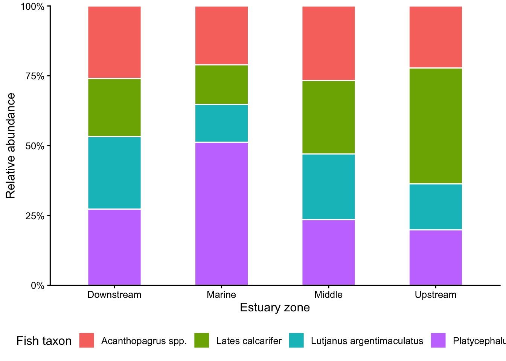
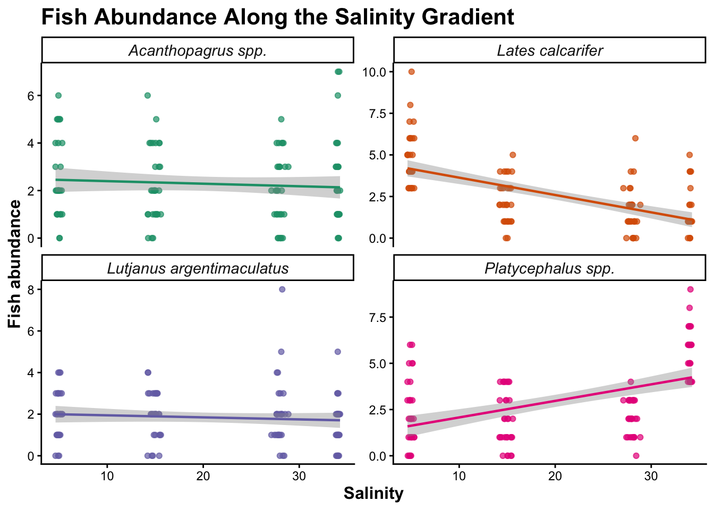
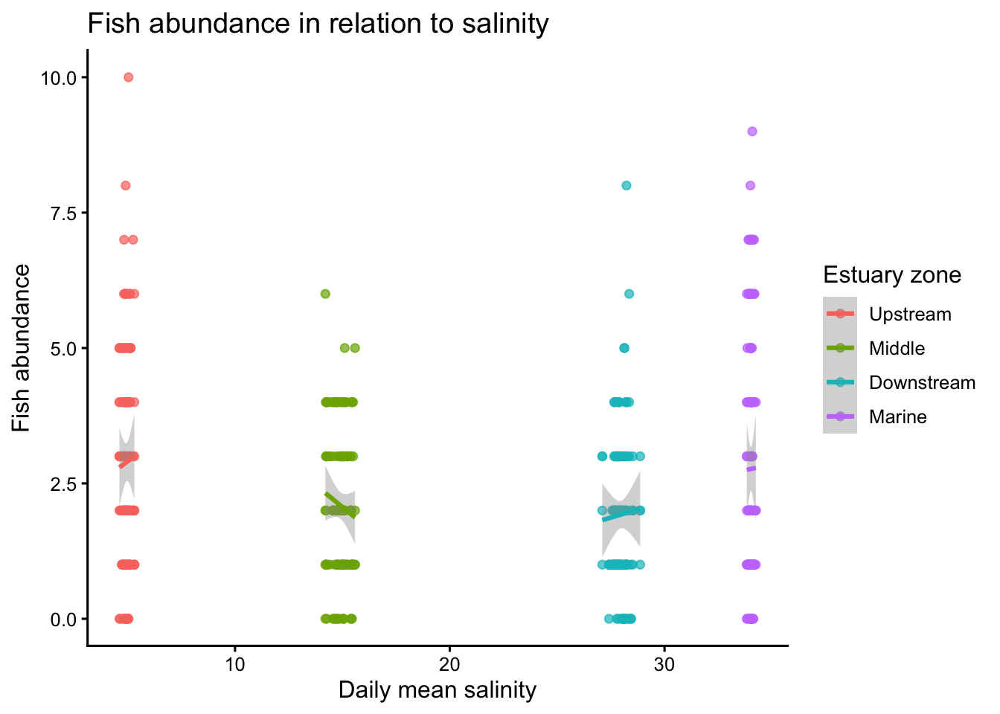
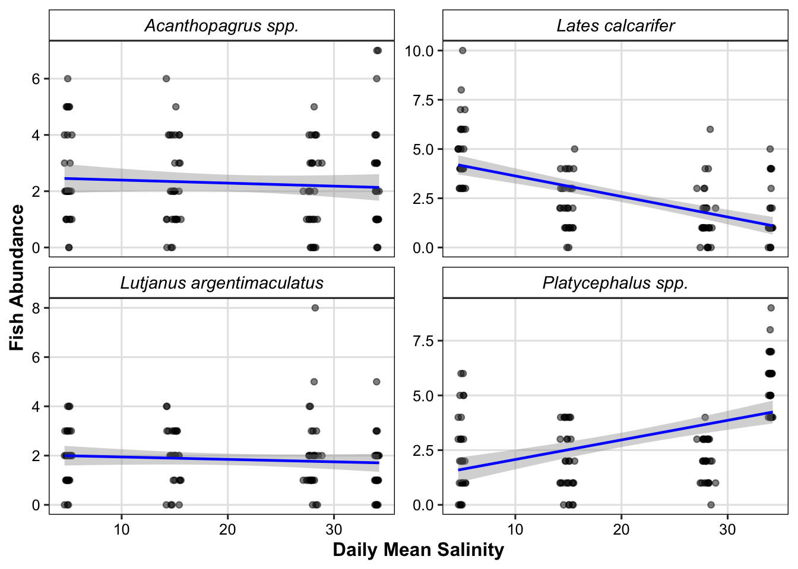

Code
library(tidyverse)
library(readxl)
library(here)
# Create folders for final outputs
#dir.create("output", showWarnings = FALSE)
#dir.create("figures", showWarnings = FALSE)Estuary Fish Survey - Data Rescue Mission The Premise: You have inherited a project from a former PhD student who was studying the *relationship between water quality and predatory fish assemblages along the Ross River Estuary gradient. Unfortunately, their data management was entirely manual, and the files are a disaster. They left you with four separate datasets: - estuary_catch_log.xlsx: Handwritten field counts of fish species (using common names), spread across multiple spreadsheet tabs. - estuary_metadata.csv: The spatial coordinates and estuary zones for each site. - estuary_sonde_data.csv: High-frequency water quality sensor readings. - species_dictionary.csv: A taxonomic lookup table linking local common names to their accepted scientific names.
Task: Write a single, reproducible R script (or .qmd) that ingests this mess, cleans it, joins it into a single master dataset, and produces a publication-ready visualisation of the estuary’s ecology.
The aim of this analysis is to rescue and combine four messy datasets from a study of the relationship between water quality and predatory fish assemblages along the Ross River Estuary gradient.
The workflow uses mainly tidyverse functions to:
The original data are not modified.
library(tidyverse)
library(readxl)
library(here)
# Create folders for final outputs
#dir.create("output", showWarnings = FALSE)
#dir.create("figures", showWarnings = FALSE)The fish catch data are stored across four Excel worksheets. The worksheets are combined into one data frame using map_dfr().
catch_file <- here::here("data/workshop2/estuary_catch_log.xlsx")
sheet_names <- excel_sheets(catch_file) #path must be a string
fish <- map_dfr(
sheet_names,
~ read_excel(catch_file, sheet = .x))
fish# A tibble: 427 × 4
site date species count
<chr> <dttm> <chr> <dbl>
1 Lower_ross 2026-05-01 00:00:00 barramundi 6
2 Lower_ross 2026-05-01 00:00:00 MANGROVE JACK 3
3 Lower_ross 2026-05-01 00:00:00 bream 4
4 Lower_ross 2026-05-01 00:00:00 flathead 2
5 Lower_ross 2026-05-02 00:00:00 barramundi 1
6 Lower_ross 2026-05-02 00:00:00 MANGROVE JACK 1
7 Lower_ross 2026-05-02 00:00:00 bream 3
8 Lower_ross 2026-05-02 00:00:00 flathead 3
9 Lower_ross 2026-05-03 00:00:00 MANGROVE JACK 2
10 Lower_ross 2026-05-03 00:00:00 flathead 3
# ℹ 417 more rowsThe site and species names have inconsistent capitalisation, spaces and underscores. These are standardised before joining the datasets.
fish_std <- fish |>
mutate(
site = str_to_lower(site), #standardise to lowercase letters
site = str_squish(site), #remove white spaces
site = str_replace_all(site, " ", "_"), #replaces spaces with _
species = str_to_lower(species),
species = str_squish(species),
species = str_replace_all(species, " ", "_"),
date = as.Date(date), #set class
count = as.numeric(count)) |>
select(site, date, species, count) |>
arrange(site, date, species)
fish_std# A tibble: 427 × 4
site date species count
<chr> <date> <chr> <dbl>
1 lower_ross 2026-05-01 barramundi 6
2 lower_ross 2026-05-01 bream 4
3 lower_ross 2026-05-01 flathead 2
4 lower_ross 2026-05-01 mangrove_jack 3
5 lower_ross 2026-05-02 barramundi 1
6 lower_ross 2026-05-02 bream 3
7 lower_ross 2026-05-02 flathead 3
8 lower_ross 2026-05-02 mangrove_jack 1
9 lower_ross 2026-05-03 flathead 3
10 lower_ross 2026-05-03 mangrove_jack 2
# ℹ 417 more rowsCheck for missing (NAs) observations:
fish_std |>
filter(is.na(site) | is.na(date) | is.na(species) | is.na(count))# A tibble: 0 × 4
# ℹ 4 variables: site <chr>, date <date>, species <chr>, count <dbl>Remove incomplete fish observations:
fish_clean <- fish_std |>
drop_na(site, date, species, count)
fish_clean# A tibble: 427 × 4
site date species count
<chr> <date> <chr> <dbl>
1 lower_ross 2026-05-01 barramundi 6
2 lower_ross 2026-05-01 bream 4
3 lower_ross 2026-05-01 flathead 2
4 lower_ross 2026-05-01 mangrove_jack 3
5 lower_ross 2026-05-02 barramundi 1
6 lower_ross 2026-05-02 bream 3
7 lower_ross 2026-05-02 flathead 3
8 lower_ross 2026-05-02 mangrove_jack 1
9 lower_ross 2026-05-03 flathead 3
10 lower_ross 2026-05-03 mangrove_jack 2
# ℹ 417 more rowsThe dictionary provides the accepted scientific name for each local common name.
species_dictionary <- read_csv(here::here("data/workshop2/species_dictionary.csv"),
show_col_types = FALSE)
species_dictionary# A tibble: 4 × 2
common_name scientific_name
<chr> <chr>
1 barramundi Lates calcarifer
2 mangrove_jack Lutjanus argentimaculatus
3 bream Acanthopagrus spp.
4 flathead Platycephalus spp. Standardise the common names so they match the fish dataset.
species_dictionary_clean <- species_dictionary |>
mutate(
common_name = str_to_lower(common_name),
common_name = str_squish(common_name),
common_name = str_replace_all(common_name, " ", "_")) |>
select(common_name, scientific_name) |>
arrange(common_name)
species_dictionary_clean# A tibble: 4 × 2
common_name scientific_name
<chr> <chr>
1 barramundi Lates calcarifer
2 bream Acanthopagrus spp.
3 flathead Platycephalus spp.
4 mangrove_jack Lutjanus argentimaculatusA left_join() keeps every fish observation and adds the corresponding scientific name.
estuary_fish <- fish_clean |>
left_join(
species_dictionary_clean,
by = c("species" = "common_name")) |>
arrange(date, site, scientific_name)
estuary_fish# A tibble: 427 × 5
site date species count scientific_name
<chr> <date> <chr> <dbl> <chr>
1 lower_ross 2026-05-01 bream 4 Acanthopagrus spp.
2 lower_ross 2026-05-01 barramundi 6 Lates calcarifer
3 lower_ross 2026-05-01 mangrove_jack 3 Lutjanus argentimaculatus
4 lower_ross 2026-05-01 flathead 2 Platycephalus spp.
5 mid_ross 2026-05-01 bream 2 Acanthopagrus spp.
6 mid_ross 2026-05-01 barramundi 4 Lates calcarifer
7 mid_ross 2026-05-01 mangrove_jack 2 Lutjanus argentimaculatus
8 mid_ross 2026-05-01 flathead 3 Platycephalus spp.
9 ross_mouth 2026-05-01 barramundi 3 Lates calcarifer
10 ross_mouth 2026-05-01 mangrove_jack 2 Lutjanus argentimaculatus
# ℹ 417 more rowsCheck whether any common names failed to match:
estuary_fish |>
filter(is.na(scientific_name)) |>
select(site, date, species, count)# A tibble: 0 × 4
# ℹ 4 variables: site <chr>, date <date>, species <chr>, count <dbl>metadata <- read_csv(here::here("data/workshop2/estuary_metadata.csv"),
show_col_types = FALSE)
metadata# A tibble: 4 × 4
site_name lat lon zone
<chr> <dbl> <dbl> <chr>
1 Upper_Ross -19.3 147. Upstream
2 mid_ross -19.3 147. Middle
3 LOWER ROSS -19.3 147. Downstream
4 ross_mouth -19.2 147. Marine The site names use different combinations of spaces, underscores and capitalisation. First convert them to a consistent format.
metadata <- metadata |>
mutate(
site_name = str_to_lower(site_name),
site_name = str_squish(site_name),
site_name = str_replace_all(site_name, " ", "_"))The site name can also be separated into two components and then recombined into a consistent site_key. This demonstrates separate() and unite() while making the standardisation explicit.
metadata_clean <- metadata |>
separate(
site_name,
into = c("site_part1", "site_part2"),
sep = "_",
extra = "merge",
fill = "right") |>
mutate(
site_part1 = str_squish(site_part1),
site_part2 = str_squish(site_part2)) |>
unite(
site,
site_part1,
site_part2,
sep = "_",
remove = FALSE) |>
select(
site,
lat,
lon,
zone) |>
arrange(lat)
metadata_clean# A tibble: 4 × 4
site lat lon zone
<chr> <dbl> <dbl> <chr>
1 upper_ross -19.3 147. Upstream
2 mid_ross -19.3 147. Middle
3 lower_ross -19.3 147. Downstream
4 ross_mouth -19.2 147. Marine The metadata currently uses site_key, so create the same key in the fish data:
estuary_complete <- estuary_fish |>
complete(
site,
date,
scientific_name
) |>
mutate(
count = coalesce(count, 0))
estuary_complete# A tibble: 480 × 5
site date scientific_name species count
<chr> <date> <chr> <chr> <dbl>
1 lower_ross 2026-05-01 Acanthopagrus spp. bream 4
2 lower_ross 2026-05-01 Lates calcarifer barramundi 6
3 lower_ross 2026-05-01 Lutjanus argentimaculatus mangrove_jack 3
4 lower_ross 2026-05-01 Platycephalus spp. flathead 2
5 lower_ross 2026-05-02 Acanthopagrus spp. bream 3
6 lower_ross 2026-05-02 Lates calcarifer barramundi 1
7 lower_ross 2026-05-02 Lutjanus argentimaculatus mangrove_jack 1
8 lower_ross 2026-05-02 Platycephalus spp. flathead 3
9 lower_ross 2026-05-03 Acanthopagrus spp. <NA> 0
10 lower_ross 2026-05-03 Lates calcarifer <NA> 0
# ℹ 470 more rowsJoin the spatial information:
#master <- estuary_complete |>
#left_join(
# metadata,
# by = "site_key") |>
#left_join(
# sonde_daily,
# by = c("site_key", "date")) |>
#arrange(date, zone, site_key, scientific_name)Check for unmatched sites:
#fish |>
#filter(is.na(zone))The sonde contains high-frequency observations collected every 15 minutes.
sonde <- read_csv(here::here("data/workshop2/estuary_sonde_data.csv"),
show_col_types = FALSE)
## Clean the sonde data
#The timestamp is converted from day/month/year format using `dmy_hm()`.
sonde_clean <- sonde |>
mutate(
site = str_to_lower(site),
site = str_squish(site),
site = str_replace_all(site, " ", "_"),
timestamp = dmy_hm(timestamp),
temperature = as.numeric(temperature),
salinity = as.numeric(salinity),
turbidity = as.numeric(turbidity),
date = as.Date(timestamp)) |> #date column for joining with dialy fish survey data
select(
site,
date,
timestamp,
temperature,
salinity,
turbidity) |>
arrange(site, timestamp)
sonde_clean# A tibble: 11,520 × 6
site date timestamp temperature salinity turbidity
<chr> <date> <dttm> <dbl> <dbl> <dbl>
1 lower_ross 2026-05-01 2026-05-01 00:00:00 24.2 28.9 48.1
2 lower_ross 2026-05-01 2026-05-01 00:15:00 22.9 30.9 33.9
3 lower_ross 2026-05-01 2026-05-01 00:30:00 24.0 30.1 7.43
4 lower_ross 2026-05-01 2026-05-01 00:45:00 23.6 28.9 44.8
5 lower_ross 2026-05-01 2026-05-01 01:00:00 24.3 24.1 25.1
6 lower_ross 2026-05-01 2026-05-01 01:15:00 23.9 23.7 16.1
7 lower_ross 2026-05-01 2026-05-01 01:30:00 23.9 30.8 21.7
8 lower_ross 2026-05-01 2026-05-01 01:45:00 24.8 25.3 45.6
9 lower_ross 2026-05-01 2026-05-01 02:00:00 23.3 29.4 27.2
10 lower_ross 2026-05-01 2026-05-01 02:15:00 25.3 32.7 17.1
# ℹ 11,510 more rowspivot_longer()Putting the three water-quality variables into one column makes it easier to apply the same quality-control rules to all variables.
sonde_long <- sonde_clean |>
pivot_longer(
cols = c(temperature, salinity, turbidity),
names_to = "variable",
values_to = "value"
) |>
arrange(site, timestamp, variable)
sonde_long# A tibble: 34,560 × 5
site date timestamp variable value
<chr> <date> <dttm> <chr> <dbl>
1 lower_ross 2026-05-01 2026-05-01 00:00:00 salinity 28.9
2 lower_ross 2026-05-01 2026-05-01 00:00:00 temperature 24.2
3 lower_ross 2026-05-01 2026-05-01 00:00:00 turbidity 48.1
4 lower_ross 2026-05-01 2026-05-01 00:15:00 salinity 30.9
5 lower_ross 2026-05-01 2026-05-01 00:15:00 temperature 22.9
6 lower_ross 2026-05-01 2026-05-01 00:15:00 turbidity 33.9
7 lower_ross 2026-05-01 2026-05-01 00:30:00 salinity 30.1
8 lower_ross 2026-05-01 2026-05-01 00:30:00 temperature 24.0
9 lower_ross 2026-05-01 2026-05-01 00:30:00 turbidity 7.43
10 lower_ross 2026-05-01 2026-05-01 00:45:00 salinity 28.9
# ℹ 34,550 more rowsThe turbidity data contain negative values including the -999 missing-value code. Negative salinity values are also invalid.
sonde_long |>
mutate(
value = case_when(
variable == "turbidity" & value < 0 ~ NA_real_,
variable == "salinity" & value < 0 ~ NA_real_,
variable == "temperature" & (value < 0 | value > 40) ~ NA_real_,
TRUE ~ value)) |>
drop_na(value) #remove observations with missing values # A tibble: 33,972 × 5
site date timestamp variable value
<chr> <date> <dttm> <chr> <dbl>
1 lower_ross 2026-05-01 2026-05-01 00:00:00 salinity 28.9
2 lower_ross 2026-05-01 2026-05-01 00:00:00 temperature 24.2
3 lower_ross 2026-05-01 2026-05-01 00:00:00 turbidity 48.1
4 lower_ross 2026-05-01 2026-05-01 00:15:00 salinity 30.9
5 lower_ross 2026-05-01 2026-05-01 00:15:00 temperature 22.9
6 lower_ross 2026-05-01 2026-05-01 00:15:00 turbidity 33.9
7 lower_ross 2026-05-01 2026-05-01 00:30:00 salinity 30.1
8 lower_ross 2026-05-01 2026-05-01 00:30:00 temperature 24.0
9 lower_ross 2026-05-01 2026-05-01 00:30:00 turbidity 7.43
10 lower_ross 2026-05-01 2026-05-01 00:45:00 salinity 28.9
# ℹ 33,962 more rowsThe fish data are recorded by day, so the 15-minute sonde observations are summarised to daily means.
sonde_daily_long <- sonde_long |>
group_by(site, date, variable) |>
summarise(
daily_mean = mean(value),
.groups = "drop") |>
arrange(date, site, variable)
sonde_daily_long# A tibble: 360 × 4
site date variable daily_mean
<chr> <date> <chr> <dbl>
1 lower_ross 2026-05-01 salinity 28.4
2 lower_ross 2026-05-01 temperature 23.8
3 lower_ross 2026-05-01 turbidity -47.0
4 mid_ross 2026-05-01 salinity 14.9
5 mid_ross 2026-05-01 temperature 24.2
6 mid_ross 2026-05-01 turbidity -16.8
7 ross_mouth 2026-05-01 salinity 34.1
8 ross_mouth 2026-05-01 temperature 24.1
9 ross_mouth 2026-05-01 turbidity -4.18
10 upper_ross 2026-05-01 salinity 4.88
# ℹ 350 more rowspivot_wider() converts the long data back into one row per site and date.
sonde_daily <- sonde_daily_long |>
pivot_wider(
names_from = variable,
values_from = daily_mean) |>
arrange(date, site)
sonde_daily# A tibble: 120 × 5
site date salinity temperature turbidity
<chr> <date> <dbl> <dbl> <dbl>
1 lower_ross 2026-05-01 28.4 23.8 -47.0
2 mid_ross 2026-05-01 14.9 24.2 -16.8
3 ross_mouth 2026-05-01 34.1 24.1 -4.18
4 upper_ross 2026-05-01 4.88 24.1 -71.3
5 lower_ross 2026-05-02 27.7 24.0 -7.87
6 mid_ross 2026-05-02 14.9 24.0 -27.5
7 ross_mouth 2026-05-02 33.8 24.0 16.8
8 upper_ross 2026-05-02 4.91 23.9 -28.2
9 lower_ross 2026-05-03 28.1 24.2 -32.5
10 mid_ross 2026-05-03 15.0 24.0 -68.7
# ℹ 110 more rowsRename the site column so it can be joined with the fish dataset:
The fish observations and daily sonde data have two common variables: site_key and date.
master <- estuary_complete |>
left_join(
metadata_clean,
by = c("site")) |>
left_join(
sonde_daily,
by = c("site", "date")) |>
arrange(date, zone, site, scientific_name)
glimpse(master)Rows: 480
Columns: 11
$ site <chr> "lower_ross", "lower_ross", "lower_ross", "lower_ross"…
$ date <date> 2026-05-01, 2026-05-01, 2026-05-01, 2026-05-01, 2026-…
$ scientific_name <chr> "Acanthopagrus spp.", "Lates calcarifer", "Lutjanus ar…
$ species <chr> "bream", "barramundi", "mangrove_jack", "flathead", NA…
$ count <dbl> 4, 6, 3, 2, 0, 3, 2, 9, 2, 4, 2, 3, 2, 5, 0, 6, 3, 1, …
$ lat <dbl> -19.26, -19.26, -19.26, -19.26, -19.25, -19.25, -19.25…
$ lon <dbl> 146.81, 146.81, 146.81, 146.81, 146.83, 146.83, 146.83…
$ zone <chr> "Downstream", "Downstream", "Downstream", "Downstream"…
$ salinity <dbl> 28.352806, 28.352806, 28.352806, 28.352806, 34.086981,…
$ temperature <dbl> 23.79137, 23.79137, 23.79137, 23.79137, 24.11178, 24.1…
$ turbidity <dbl> -46.971263, -46.971263, -46.971263, -46.971263, -4.178…The resulting master dataset contains:
Check the dimensions:
dim(master)[1] 480 11Check the sites:
master |>
select(site, zone, lat, lon) |>
distinct() |>
arrange(lat)# A tibble: 4 × 4
site zone lat lon
<chr> <chr> <dbl> <dbl>
1 upper_ross Upstream -19.3 147.
2 mid_ross Middle -19.3 147.
3 lower_ross Downstream -19.3 147.
4 ross_mouth Marine -19.2 147.Check the species:
master |>
select(species, scientific_name) |>
distinct() |>
arrange(scientific_name)# A tibble: 8 × 2
species scientific_name
<chr> <chr>
1 bream Acanthopagrus spp.
2 <NA> Acanthopagrus spp.
3 barramundi Lates calcarifer
4 <NA> Lates calcarifer
5 mangrove_jack Lutjanus argentimaculatus
6 <NA> Lutjanus argentimaculatus
7 flathead Platycephalus spp.
8 <NA> Platycephalus spp. Check for missing joined values:
master |>
filter(
is.na(scientific_name) |
is.na(zone) |
is.na(salinity) |
is.na(turbidity))# A tibble: 0 × 11
# ℹ 11 variables: site <chr>, date <date>, scientific_name <chr>,
# species <chr>, count <dbl>, lat <dbl>, lon <dbl>, zone <chr>,
# salinity <dbl>, temperature <dbl>, turbidity <dbl>Export the rescued dataset:
write_csv(
master,
here::here("output/estuary_master_dataset.csv"))Calculate the total abundance of each species within each estuary zone.
fish_zone <- master |>
group_by(zone, scientific_name) |>
summarise(
abundance = sum(count),
.groups = "drop") |>
arrange(zone, desc(abundance))
fish_zone# A tibble: 16 × 3
zone scientific_name abundance
<chr> <chr> <dbl>
1 Downstream Platycephalus spp. 63
2 Downstream Acanthopagrus spp. 60
3 Downstream Lutjanus argentimaculatus 60
4 Downstream Lates calcarifer 48
5 Marine Platycephalus spp. 170
6 Marine Acanthopagrus spp. 70
7 Marine Lates calcarifer 47
8 Marine Lutjanus argentimaculatus 45
9 Middle Acanthopagrus spp. 67
10 Middle Lates calcarifer 66
11 Middle Lutjanus argentimaculatus 59
12 Middle Platycephalus spp. 59
13 Upstream Lates calcarifer 144
14 Upstream Acanthopagrus spp. 77
15 Upstream Platycephalus spp. 69
16 Upstream Lutjanus argentimaculatus 57Calculate relative abundance within each zone:
fish_zone <- fish_zone |>
group_by(zone) |>
mutate(
relative_abundance = abundance / sum(abundance)) |>
ungroup()
fish_zone# A tibble: 16 × 4
zone scientific_name abundance relative_abundance
<chr> <chr> <dbl> <dbl>
1 Downstream Platycephalus spp. 63 0.273
2 Downstream Acanthopagrus spp. 60 0.260
3 Downstream Lutjanus argentimaculatus 60 0.260
4 Downstream Lates calcarifer 48 0.208
5 Marine Platycephalus spp. 170 0.512
6 Marine Acanthopagrus spp. 70 0.211
7 Marine Lates calcarifer 47 0.142
8 Marine Lutjanus argentimaculatus 45 0.136
9 Middle Acanthopagrus spp. 67 0.267
10 Middle Lates calcarifer 66 0.263
11 Middle Lutjanus argentimaculatus 59 0.235
12 Middle Platycephalus spp. 59 0.235
13 Upstream Lates calcarifer 144 0.415
14 Upstream Acanthopagrus spp. 77 0.222
15 Upstream Platycephalus spp. 69 0.199
16 Upstream Lutjanus argentimaculatus 57 0.164##Summary Table
summary_table <- master |>
group_by(scientific_name, zone) |>
summarise(
mean_abundance = mean(count, na.rm = TRUE),
se_abundance = sd(count, na.rm = TRUE) /
sqrt(sum(!is.na(count))),
mean_salinity = mean(salinity, na.rm = TRUE),
se_salinity = sd(salinity, na.rm = TRUE) /
sqrt(sum(!is.na(salinity))),
.groups = "drop")
write_csv(
summary_table,
here::here("output/summary_table.csv"))##Figure The main figure shows how the fish assemblage changes along the Ross River estuary gradient. Predatory fish assemblages across the Ross River Estuary: Relative abundance of recorded fish taxa across the estuary gradient
figure <- ggplot(fish_zone,
aes(x = zone, y = relative_abundance, fill = scientific_name)) +
geom_col(width = 0.5, colour = "white") +
scale_y_continuous(
labels = scales::percent,
expand = c(0, 0)) +
labs(
x = "Estuary zone",
y = "Relative abundance",
fill = "Fish taxon") +
theme_classic(base_size = 12) +
theme(
legend.position = "bottom",
axis.text.x = element_text(angle = 0, hjust = 0.5))
figure
#Save the figure:
ggsave(here::here("output/ross_river_fish_assemblage.png"),
figure,
width = 10,
height = 6,
dpi = 300)ePortfolio figure : Fish Abundance vs Salinity Gradient
master <- master |>
mutate(
zone = factor(zone, levels = c("Upstream", "Middle", "Downstream", "Marine")))
ggplot(master, aes(x = salinity, y = count, colour = scientific_name)) +
geom_point(size = 1.5, alpha = 0.7) +
geom_smooth(method = "lm", se = TRUE, linewidth = 0.8) +
facet_wrap(
~ scientific_name,
scales = "free_y") +
scale_colour_brewer(
palette = "Dark2") +
labs(
title = "Fish Abundance Along the Salinity Gradient",
x = "Salinity",
y = "Fish abundance") +
theme_classic() +
theme(
plot.title = element_text(face = "bold", size = 16),
axis.title = element_text(face = "bold", size = 12),
strip.text = element_text(face = "italic", size = 11),
legend.position = "none"
)
Save the figure:
ggsave(
here::here("output/ross_river_fish_assemblage.png"),
figure,
width = 10,
height = 6,
dpi = 300
)A second visualisation can examine the relationship between fish abundance and salinity.
ggplot(
master,
aes(x = salinity, y = count, colour = zone)) +
geom_point(alpha = 0.7) +
geom_smooth(method = "lm", se = TRUE) +
labs(
title = "Fish abundance in relation to salinity",
x = "Daily mean salinity",
y = "Fish abundance",
colour = "Estuary zone") +
theme_classic(base_size = 12)
ggplot(master, aes(x = salinity, y = count)) +
# Raw data points with transparency to handle overlapping
geom_point(size = 1.5, alpha = 0.5, colour = "black") +
# Linear trendline with standard error shading
geom_smooth(method = "lm", se = TRUE, colour = "blue", linewidth = 0.8) +
# Facet by species, allowing the y-axis to scale independently for each taxon
facet_wrap(~ scientific_name, scales = "free_y") +
labs(
x = "Daily Mean Salinity",
y = "Fish Abundance"
) +
# theme_bw provides a clean, framed baseline for multi-panel publication plots
theme_bw(base_size = 12) +
theme(
# Taxonomic conventions require scientific names to be italicized
strip.text = element_text(face = "italic", size = 11, colour = "black"),
strip.background = element_rect(fill = "white", colour = "black", linewidth = 0.5),
axis.title = element_text(face = "bold", size = 12, colour = "black"),
axis.text = element_text(colour = "black"),
# Remove distracting minor gridlines while keeping major ones for readability
panel.grid.minor = element_blank(),
panel.grid.major = element_line(colour = "grey90"),
# Ensure borders around each facet are sharp
panel.border = element_rect(colour = "black", fill = NA, linewidth = 0.5),
legend.position = "none"
)
The rescued dataset combines the original fish observations, taxonomic information, spatial metadata and daily water-quality measurements into a single reproducible dataset.
The main data-management steps were:
mutate();select() and arrange();drop_na();separate() and unite();pivot_longer() and pivot_wider();left_join(); andgroup_by() and summarise().The final master dataset is saved as output/estuary_master_dataset.csv, and the publication-ready fish assemblage figure is saved in the output/ folder.